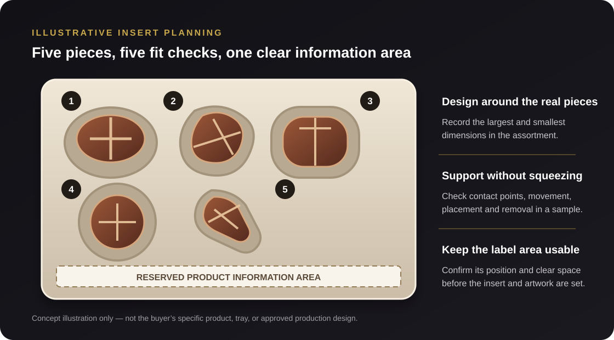

A Protective Insert Must Hold Without Crushing
How to plan a five-piece chocolate tray that controls movement, respects different product shapes and leaves room for required information.
“Make the insert tighter” sounds like a straightforward fix when products move inside a box. For delicate confectionery, however, a tight cavity can create a new problem: the tray may press on a piece that should only be gently supported. The goal is not maximum tightness. It is a repeatable fit that supports the product, keeps the presentation organized and remains practical to pack.
This matters especially when a single gift set contains pieces with different dimensions or shapes. A common tray outline may look tidy on screen, but each cavity still needs to work with the actual chocolate it is meant to hold.

The buyer inquiry: five different chocolates, one gift box
An anonymized confectionery inquiry involved five filled chocolates of different sizes in one gift box. The tray needed to prevent the pieces from shifting without pressing on or damaging them. The buyer also needed a product-information area on the box base and was comparing several color options.
That made the tray and the information layout linked design decisions. If the insert footprint or cavity arrangement changes later, the reserved information area may need to move too. The brief called for both to be settled before the sample could be reviewed meaningfully.
Case note: This example is based on an anonymized buyer inquiry. It describes the packaging questions raised; it does not claim that the design was approved, an order was placed, or production was completed.
The useful starting point is an item-by-item fit plan. Treat each of the five chocolates as its own product until measurements and a sample prove that two or more can share the same cavity design.
What the insert needs to do
For this kind of set, the insert has three related jobs:
- Control movement: give each piece a defined place so it does not freely roll or collide with the other pieces during ordinary packing and handling.
- Avoid unnecessary pressure: identify the surfaces or decorative details that should not bear against the tray, and let the sample show whether the support is gentle and stable.
- Keep the set presentable and usable: make each chocolate easy to place and remove, while maintaining the intended layout and preserving the space needed for product information.
These goals should be confirmed for the actual confectionery. The insert material, cavity shape and contact points depend on the product and on whether the chocolate is individually wrapped or touches the tray directly.
Start with the complete product range
Measure every piece that may go into the box, not only an average piece or a single sample. Record the widest, longest and tallest points, along with any raised decoration, irregular edge or fragile feature that affects how it can sit. If the assortment varies between batches or flavors, identify that range before the cavities are fixed.
Use real products where possible. A drawing can indicate approximate dimensions, but the physical sample can reveal details that are easy to miss: an uneven base, a soft filling that changes shape, a fragile topping, or a wrapper seam that affects the fit. Keep the measurement reference clear so the designer and supplier know which surface each dimension describes.
| For each chocolate | Record or confirm | Why the insert designer needs it |
|---|---|---|
| Overall size | Maximum length, width and height, including visible toppings or decoration. | Defines the cavity envelope and helps compare the smallest and largest pieces. |
| Shape and orientation | Preferred top-facing side, base shape and any orientation that matters to presentation. | Shows how the piece should sit and which surfaces may contact the tray. |
| Fragile or sensitive areas | Features that should not be pressed, scraped or used as support points. | Helps avoid a cavity that stabilizes the piece by pushing on a vulnerable detail. |
| Pack state | Whether each piece is individually wrapped and the final packed dimensions. | Packaging around the chocolate can change the space each cavity needs. |
| Assortment variation | Which pieces vary by flavor, decoration, production batch or seasonal mix. | Determines whether cavities can be shared or need separate fit checks. |
Balance movement control with gentle support
A cavity should be designed around where the chocolate can be supported, not just around its outline. A piece with a broad stable base may sit differently from a taller or irregular piece. A feature that looks decorative may also be the part most likely to crack or flatten if the tray presses against it.
Look at the contact points
During a sample review, check where the piece touches the insert. Ask whether the contact is intentional, whether it supports a stable area and whether it leaves sensitive details clear. The answer should be visible with the actual product in place, rather than inferred from a top-down rendering.
Check insertion and removal, not only the resting fit
A cavity that holds a chocolate securely can still be awkward if the packer cannot place the piece consistently or the recipient cannot lift it out without pinching a fragile area. Test the real packing motion and removal method. If a finger notch, paper lift tab or another access feature is being considered, check that it does not interfere with the product, information area or overall layout.
Compare the smallest and largest pieces
Try each design variant in its assigned cavity. The smallest item may move even when the largest seems firmly located; the largest may touch the wall or press against the top of the box. Do not assume that a tray which fits one piece will automatically suit the full range.
For broader guidance on planning product-kit cavities and evaluating a sample, see our custom box insert guide.
Reserve the product-information area early
The buyer also needed information printed on the box base. That space should be treated as part of the package layout from the beginning, not as leftover area after the tray is drawn. Confirm what information must appear, its intended location, and whether the buyer expects it to be visible while the chocolates are in place or only after removing the tray.
Ask the designer to show the insert and information panel together in the same layout. Check that the tray does not cover text, that the usable panel area is large enough for the supplied content, and that any fold, wall, lid or product placement does not make it difficult to read. Final dimensions and artwork should be reviewed together at sample stage.
If the insert or its coating may directly contact unpackaged food, confirm the intended material and use with the supplier and the buyer’s qualified compliance contact for the markets where the product will be sold. Do not infer food-contact suitability from appearance or from a material name alone.
Keep color comparisons separate from fit approval
The inquiry included several color options. Compare those options against the same tray structure, product arrangement and information layout wherever possible. That way, the review can separate a color preference from a change to cavity size or panel placement.
Screen images can help narrow down a direction, but they are not a substitute for reviewing the chosen materials and finish in a sample or other agreed proof. Record which color direction is provisional and which design version is being reviewed. If the tray layout changes, check that the color mockup still represents the current structure.
A practical five-piece sample checklist
Before approving the tray, check each point with the actual assortment
- Place all five pieces in their assigned cavities.
- Include both the smallest and largest versions.
- Check each piece’s orientation and intended support points.
- Look for pressure on fragile tops, edges or decorations.
- Gently handle the filled box and inspect whether pieces shift.
- Practice packing the set in the intended sequence.
- Remove each chocolate without squeezing or scraping it.
- Confirm the information area remains clear and usable.
- Review the insert and box colors as one coordinated design.
- Record what the sample does and does not represent.
A sample demonstrates the fit of the items and materials actually used in that review. If product size, wrapper, insert material, box dimensions, artwork or color changes afterward, decide whether the changed part needs another check before production.
Common insert-design mistakes to avoid
- Designing around an average piece. Check the full size range and the pieces with the most delicate details.
- Using tightness as the only measure of protection. A snug-looking cavity can put pressure in the wrong place.
- Reviewing only the empty tray. The five chocolates show whether the layout and contact points actually work.
- Forgetting how the item comes out. A secure fit still needs a practical, gentle removal method.
- Adding information after the tray is approved. Reserve the box-base area before the insert and artwork are finalized.
- Approving color separately from the current design version. Make sure the sample or proof corresponds to the right tray layout and artwork.
Frequently asked questions
How should an insert hold fragile chocolates?
Start by identifying stable support areas and features that should not be pressed. Then test each piece in a sample to see whether it stays in place during ordinary handling and can be removed without force. The right contact points depend on the actual shape and packaging around each chocolate.
Can five different chocolates share one tray?
Yes, a single tray can be planned for several different items, but the cavities should be checked against each assigned piece. Record each item’s dimensions and orientation, and test the smallest and largest variants rather than assuming one cavity size fits all.
When should the information panel be planned?
At the same time as the insert layout. Confirm what information must appear and whether it should remain visible with the tray in place, then show both the tray and panel together on the box-base layout.
Does a gift-box insert automatically qualify for direct food contact?
No. If the insert or a surface treatment may touch unpackaged food, confirm suitability for the intended product and sales markets with the supplier and the buyer’s qualified compliance contact. Do not assume based on appearance or a generic material description.
Approve the fit with real chocolates
In this inquiry, the tray had to hold five differently sized chocolates without crushing them, while leaving room on the box base for product information. The most useful next step is to prepare the actual product range, identify safe support points, place the information panel in the same layout and review a filled sample before locking the insert design.
For a similar project, share the product dimensions or samples, the intended pack arrangement, any fragile details, required box-base information, color directions and destination market. Crown Win can help organize these details for a custom packaging discussion.
Planning a confectionery gift box? Send your assortment details, preferred layout and information requirements through our quote request page. If a custom cavity layout is involved, include a dimension sheet or product photos with a scale reference.